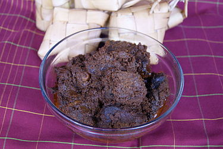

Rendang

Rendang is a Minang dish originating from the Minangkabau region in West Sumatra, Indonesia. It has spread across
Indonesian cuisine to the cuisines of neighbouring Southeast Asian countries such as Malaysia, Singapore, Brunei
and the Philippines. Rendang is often described as a rich dish of meat — most commonly beef (rendang daging) —
that has been slow cooked and braised in a coconut milk seasoned with a herb and spice mixture, until the
liquids evaporate and the meat turns dark brown and tender, becoming caramelized and infused with rich flavours.
As the signature dish of Minangkabau culture, rendang is traditionally served at ceremonial occasions to honour
guests during festive events; such as wedding feasts and Lebaran or Hari Raya (Indonesian popular words for both
Eid al-Fitr and Eid al-Adha). Rendang is also traditionally served among the Malay community in Indonesia,
Malaysia, Singapore and Brunei, as well as the Maranao in the Philippines.
Ingredients
- 2 ½ pounds beef chuck
- 4 shallots, sliced
- 6 cloves garlic
- 1 (1 1/2 inch) piece ginger, peeled and sliced
- 1 ½ inch piece galangal, peeled and sliced
- 2 serrano chile peppers - stemmed, seeded, and sliced
- 1 Fresno chile pepper - stemmed, seeded, and sliced
- 1 tablespoon Korean red pepper flakes
- 1 teaspoon ground coriander
- ½ teaspoon ground turmeric
- ⅛ teaspoon ground cardamom
- ⅛ teaspoon freshly grated nutmeg
- 2 tablespoons vegetable oil
- 1 (14 ounce) can full-fat coconut milk
- 2 teaspoons tamarind paste
- 1 tablespoon brown sugar
- ½ stalk lemongrass, light part
Directions
- Cut beef chuck into 2-inch pieces.
- Combine shallots, garlic, ginger, galangal, serrano and Fresno chiles, salt, red pepper flakes, coriander,
turmeric, cardamom, and nutmeg in the bowl of a food processor. Pulse until paste is very finely ground,
stopping occasionally to scrape down the sides with a spatula.
- Heat oil in a pan over medium heat. Add the curry paste. Cook and stir until it starts to dry out, then stir
in the beef. Add coconut milk, tamarind paste, and brown sugar. Stir to combine. Fill up the empty can of
coconut milk with water and pour it into the pan. Increase heat to medium-high; bring to a simmer.
- In the meantime, bruise lemongrass with the back of your knife. Cut into 1- to 2-inch pieces and add to the
curry. Reduce heat to medium. Cook, uncovered, stirring occasionally, until beef is fork-tender and sauce is
fully reduced, about 4 hours. Stir more frequently as water reduces; add more water or lower the heat if
sauce is reducing faster than beef is softening.
- Remove lemongrass to serve. For best results, let cool and serve the next day.
home